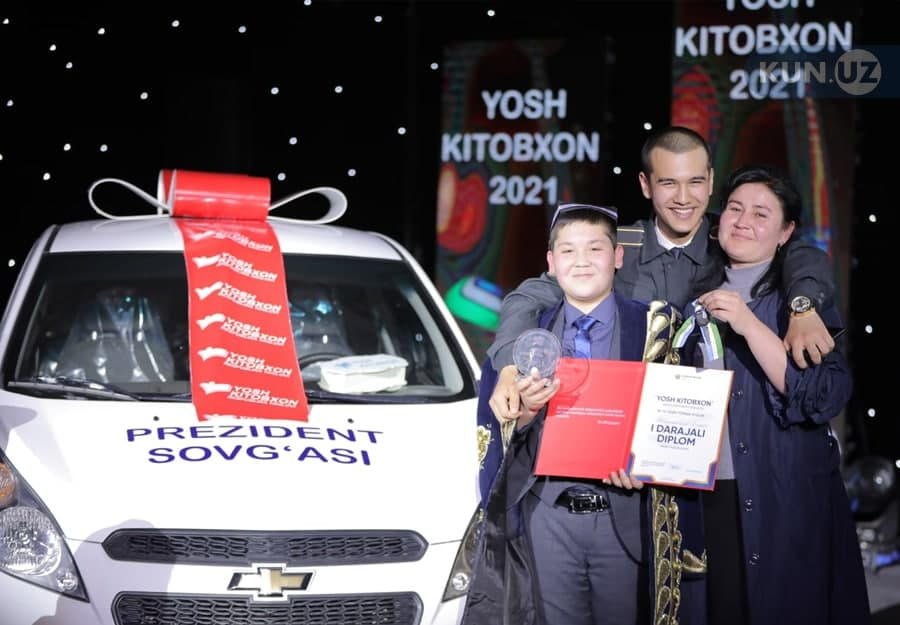
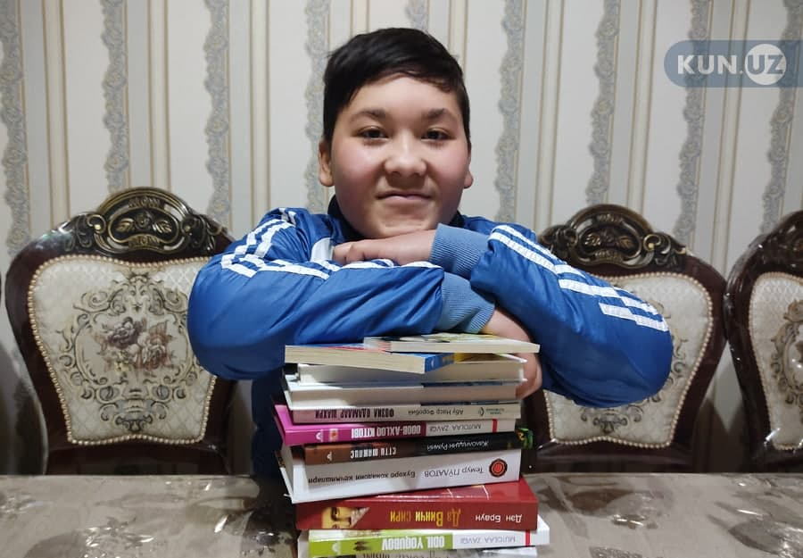

MUHAMMADFOZIL ISMOILOV HAQIDA MA'LUMOT
Muhammadfozil Ismoilov Farg‘ona viloyati O‘zbekiston tumanidagi 50-maktabning 9-sinfida tahsil oladi. 2021
yilda «Yosh kitobxon» tanlovining respublika bosqichida g‘oliblikni qo‘lga kiritgan Muhammadfozilga
prezident sovg‘asi «Spark» avtomobili topshirilgan.
Muhammadfozilning onasi Mukammalxon Muqimjonova 50-umumiy o‘rta ta’lim maktabida tarix fanidan dars beradi. U ham ota, ham ona bo‘lib ikki o‘g‘liga mehr berib tarbiyalamoqda.
Muhammadfozilning akasi Kamronbek ham shu yilning 6-7 fevral kunlari «Yosh kitobxon» Respublika tanlovining Farg‘ona viloyati bosqichida 15–19 yosh toifasida ishtirok etib g‘olib bo‘ldi.
Muhammadfozilning birinchi o‘qigan kitobi o‘zbek xalq ertaklari turkumiga kiruvchi «Uchar gilam» bo‘lgan ekan.
«Kitobga bo‘lgan qiziqishim 1-sinfga chiqmasimdanoq uyg‘ongan. Bunga onam sabab bo‘lgan. Chunki onam menga alifbo kitobini yod oldirgan. Maktabga chiqishim bilanoq kitoblarni tez o‘qib tugatishni boshladim. Savodim erta chiqqanidan onam qatori ustozlarim ham birdek xursand bo‘lishdi. Shundan keyin onam meni kutubxonaga olib bordi va menga o‘zbek xalq ertaklari turkumidan «Uchar gilam» kitobini sovg‘a qildi.
Bu kitobni haligacha e’zozlayman. Chunki mening kitobxonlik sari yo‘l olishimda ilk tamal toshini qo‘yib bergan, tarozi pallasi bir tomonini og‘ir qilib bosib bergan kitob aynan shu ertak kitobi bo‘ldi.
Qay bir o‘quvchi bizning maktab kutubxonasiga kiradigan bo‘lsa, albatta shu kitobni qo‘liga tutqazaman: «Izlanmang, mana shu kitobni o‘qing, u yog‘i ertaklardan boshlab qolgan adabiyotlarga bo‘lgan qiziqishingiz ortadi», deb maslahat beraman», — deydi u.
Muhammadfozil Ismoilov «Yosh kitobxon» tanlovi unga ibrat maktabi bo‘lib xizmat qilgani, aynan shu tanlov tufayli adabiyotga mehr qo‘yganini ta’kidladi.
«Yosh kitobxon ko‘rik-tanloviga ilk bor 2018-2019 yillarda qatnashganman. Aynan shu yildan boshlab tanlovda ishtirok eta boshladim. 2018 yilda viloyat bosqichigacha yetib bordim va unda 2-o‘rinni qo‘lga kiritdim. Onam va akamning qayta-qayta menga dalda berganlari ortidan natijamni yaxshilash maqsadida keyingi yili ham qatnashishni boshladim.
Keyingi yilda respublika bosqichigacha bordim. Respublikada faxrli o‘rinni olib qaytganimdan keyin o‘zimga xulosa chiqardim. Kitobni sovrin uchun emas. Balki o‘zimizga kerak bo‘lgan ma’lumotlarni olib miyamizda saqlay olishni bilsak bu biz uchun katta boylik ekanini anglab yetdim.
Nihoyat, onajonimning duolari sabab tanlovning respublika bosqichida ishtirok etish huquqini qo‘lga kiritdim. Aynan bu safargi respublika bosqichi o‘tgan tanlovlardan ko‘ra ancha shiddatli bo‘ldi. Asosiysi, o‘zimda bo‘lgan barcha bilimlarimni sahnada hayajon bosmay, fikrimni yo‘qotib qo‘ymasdan tafakkur qobiliyatimni ishga solib qolganlarga yetkazib bera oldim. O‘z darajamni imkon qadar ko‘rsata oldim.
Oliy sovrin — «Spark» avtomashinasiga keladigan bo‘lsak, prezidentimizga men shu o‘rinda katta rahmat aytmoqchiman. Yosh kitobxon tanlovi aynan menga ibrat maktabi bo‘lib xizmat qildi. Inson uchun eng katta boylik olgan bilimingiz kelajakda albatta o‘zingizga asqatishi ekan. Chunki aynan shu tanlov bahona men adabiyot faniga mehr qo‘ydim. Ko‘p adiblarning nomini yod oldim.

